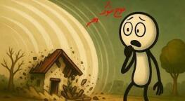

اگر ۸ میلیارد آدم همزمان کف بزنند چه میشود؟

تا حالا به این فکر کردهای اگر ۸ میلیارد آدم همزمان با هم کف بزنند چه میشود؟ به نظرت یک صدای عادی میماند، یا قرار است بیشتر از این حرفها باشد؟
خود کف زدن چیست؟
قبل از اینکه ۸ میلیارد نفر را وارد ماجرا کنیم، بیا ببینیم خود عمل کف زدن چیست. وقتی دو کف دست را به هم میکوبی، هوای بینشان به سرعت فشرده و به اطراف پخش میشود. این حرکت سریع مولکولهای هوا یک موج فشار میسازد که در محیط حرکت میکند و وقتی به پردهٔ گوش میرسد، آن را به صورت صدا درک میکنیم. کنار صدا، مقدار خیلی کمی هم انرژی به صورت گرما تولید میشود که اصلاً حسش نمیکنیم. از هر کف زدن، یک انفجار صوتی کوچولو درمیآید و یک تبدیل انرژی خیلی جزئی از جنبشی به صوتی و گرمایی. خب تا اینجایش که ساده بود، نه؟
اول باید جا شوند
حالا ۸ میلیارد آدم را با هم حساب کنیم. هر نفر حتی اگر خیلی فشرده بایستد، حداقل به نیم متر مربع فضا نیاز دارد. برای ۸ میلیارد نفر چیزی حدود ۴ میلیارد متر مربع، یعنی ۴۰۰۰ کیلومتر مربع باید خالی باشد. برای اینکه بهتر درک کنی: یک دشت صاف، یک مربع با ضلع حدود ۶۳ کیلومتر. تازه این بدون راه فرار، جا برای نفس کشیدن، یا دوربین ثبت این لحظهٔ تاریخی است.
فرض کنیم معجزه شده و همه جمع شدهاند. مهمتر از جمع شدن، هماهنگی است. اگر یکی زودتر بزند و یکی دیرتر، آن همزمانی کامل از بین میرود. برای اینکه موجها دقیقاً همفاز شوند، یعنی همهٔ ذرههای هوا در یک لحظه تحت فشار قرار بگیرند، باید همهٔ دستها با دقت در حد میکروثانیه به هم بخورند. چیزی که حتی در ارکستر سمفونیک به سختی رخ میدهد، چه برسد به میلیاردها آدم پراکنده با ریتم متفاوت.
نفس و گرما، قبل از صدا
۸ میلیارد نفر در یک فضای محدود، حتی اگر دشت بزرگی باشد، یعنی مصرف نفسگیر اکسیژن. در شرایط هیجان هر نفر حدود ۸ لیتر هوا در دقیقه مصرف میکند؛ یعنی ۶۴ میلیارد لیتر در دقیقه. اگر جریان هوا کافی نباشد، سطح دیاکسید کربن بالا میرود و در مرکز تجمع گیجی و حتی بیهوشی پیش میآید.
بدنها گرما هم تولید میکنند. حدود ۱۰۰ وات به ازای هر نفر. در مجموع ۸۰۰ گیگاوات گرمای انسانی. این به اندازهٔ خروجی صدها نیروگاه بزرگ است، آن هم وسط بیابان و بدون تهویه. یعنی گرما و کمبود اکسیژن، یک دردسر زیستی، حتی اگر موج صوتی به کسی آسیب نزند.
حالا تصور کن همهٔ آدمهای روی کرهٔ زمین به طریقی معجزهآسا در یک نقطه جمع شوند، بدون هیچ مشکلی، و همزمان، تکرار میکنم همزمان، کف بزنند. اگر همزمان نباشند یا پخش باشند، داستان کلاً فرق میکند. پس فعلاً فرض میکنیم هم جمع شدهاند و هم دقیقاً در یک لحظه کف میزنند.
صدا از ۲۰۰ دسیبل رد میشود
اولین و واضحترین اتفاق، صداست. همان موج فشاری، حالا از ۸ میلیارد منبع همزمان. یک حرف زدن معمولی حدود ۷۰ دسیبل است. وقتی منبعها زیاد میشوند، قضیه لگاریتمی بالا میرود. اگر صدا ۱۰ برابر شود، ۱۰ دسیبل اضافه میشود. ۱۰۰ برابر، ۲۰ دسیبل. یک میلیارد برابر، ۹۰ دسیبل. برای ۸ میلیارد نفر حساب دقیق یککم پیچیده است، ولی خیلی راحت میتوانیم بگوییم شدت صدا در مرکز از ۲۰۰ دسیبل فراتر میرود.
۲۰۰ دسیبل یعنی چه؟ آستانهٔ درد گوش انسان حدود ۱۲۰ تا ۱۳۰ دسیبل است و بالاتر از آن آسیب دائمی شروع میشود. موتور جت از نزدیک حدود ۱۴۰ دسیبل است. پرتاب یک موشک غولپیکر از نزدیک حدود ۱۸۰ تا ۱۹۰ دسیبل. ۲۰۰ دسیبل فراتر از این حرفهاست. یعنی هر کس آن نزدیکی باشد، در جا و برای همیشه گوشش آسیب جدی میبیند. این لایهٔ اول ماجرا بود. البته اگر بشود به کر شدن گفت آسان.
از صدا به موج شوک
اینجاست که قضیه از صرفاً یک صدای بلند خارج میشود و وارد تخریب فیزیکی میشود. صدا موج فشار است. وقتی شدت این موج آنقدر بالا برود که از حدود ۱۹۴ دسیبل بگذرد، دیگر فقط یک موج صوتی نیست. تبدیل به موج شوک میشود، مثل موج یک انفجار. این موج فشار میتواند شیشهها را تا کیلومترها آن طرفتر خرد کند. ساختمانهای نزدیک مرکز احتمالاً آسیب سازهای جدی میبینند. برای موجودات زنده هم این فشار میتواند به اندامهای داخلی، مخصوصاً ریهها که پر از هوا هستند، آسیب جدی بزند. پس دیگر فقط بحث گوش نیست.
۸ میلیون ژول، در برابر صاعقه
این همه سر و صدا واقعاً چقدر قدرت پشتش است؟ اگر انرژی صوتی هر کف زدن را خیلی دستپایین حدود یکهزارم ژول بگیریم، که احتمالاً خیلی کمتر از انرژی کل حرکت دست است و فقط بخش کوچکی از انرژی جنبشی را شامل میشود، با ۸ میلیارد نفر میرسیم به ۸ میلیون ژول.
شاید ۸ میلیون ژول روی کاغذ کم به نظر بیاید. این انرژی تقریباً معادل انرژی جنبشی یک کامیون ۲۰ تنی است که با سرعت ۱۰۰ کیلومتر در ساعت به یک دیوار بکوبد. اگر چنین انرژیای ناگهان و در یک نقطه، به شکل موج فشار آزاد شود، نتیجهاش یک انفجار کوچک ولی پرقدرت در همان مرکز تجمع است. میتواند چیزهای نزدیک را به هم بریزد و آسیب جدی به بار بیاورد.
ولی قبل از اینکه فکر کنیم با این کف زدن دنیا به آخر میرسد، این ۸ میلیون ژول را کنار انرژیهای واقعاً عظیم طبیعت بگذار. یک صاعقهٔ معمولی که در آسمان میبینی به راحتی بیش از ۱۰۰ برابر این مقدار انرژی دارد؛ حدود یک میلیارد ژول یا بیشتر. یک زمینلرزهٔ متوسط انرژیای آزاد میکند که هزاران یا حتی میلیونها برابر بیشتر از این ۸ میلیون ژول است.
نتیجه چیست؟ انرژی کف زدن همزمان ۸ میلیارد نفر، هرچقدر در مرکز تجمع شدید و مخرب باشد، در برابر غولهای طبیعت مثل صاعقه و زمینلرزه مثل یک جرقهٔ کوچک است. به همین دلیل این پدیده، هرچند فانتزی، قرار نیست کل کرهٔ زمین را بلرزاند، سونامی عظیم بسازد یا آبوهوا را عوض کند. قدرت تخریبش موضعی و متمرکز است. اما در همان محدوده، بدون شک خطرناک و ویرانگر است.
ممکن است؟
در آخر، همهٔ این حسابها ما را به یک سؤال میرساند. آیا انجام چنین کاری ممکن است؟ از نظر فنی نه. جمع کردن همه، همفاز کردن دستها در حد میکروثانیه، و زنده ماندن در آن گرما و کمبود هوا، خودش معجزه میخواهد. از نظر علمی میتواند جالبترین تجربهٔ صوتی و فیزیکی ثبتشده در تاریخ بشر باشد.
اما اگر واقعاً اتفاق بیفتد، احتمالاً به جای شنیدن صدای کف زدن، اولین چیزی که میشنوی صدای زنگ ممتد گوشهایت است. دومین چیز شاید سکوت باشد. سکوتی سنگین، نه به خاطر پایان دنیا، بلکه چون خودت دیگر صدایی نمیشنوی. تا فکر بعدی، کنجکاو بمان.